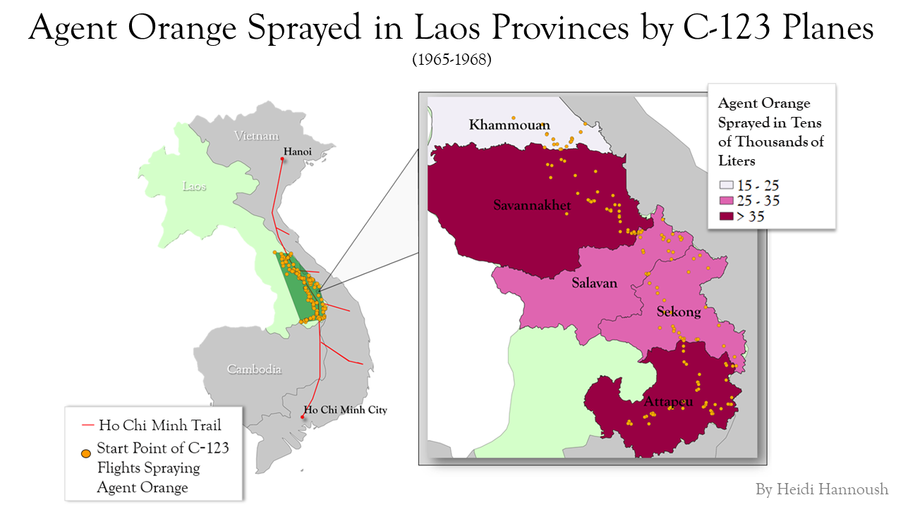

Homework 10: Geoprocessing
Heidi Hannoush
This is a map of the areas the US Military sprayed with Agent Orange using C-123 planes in Laos from 1965-1968. Agent Orange is a powerful herbicide; the U.S. military used it during the Vietnam War to destroy crops and reduce forest cover. Much of the herbicide was sprayed along the Ho Chi Minh Trail, which was used by the North Vietnamese to transport materials.
Unfortunately, the herbicide had devastating environmental and health effects on communities living in sprayed areas as well as U.S. soldiers who were there temporarily fighting. While the U.S. recognizes the immoratily of the use of Agent Orange today and offers reparations to both people in Vietnam and U.S. veterans, there are still many victims who go unnoticed.
Such is the point of this map. Although Laos was neutral during the war, Agent Orange was still sprayed in its boundaries. The spraying of Agent Orange was much more concentrated in Laos compared to Vietnam as the Ho Chi Minh Trail runs through a smaller fraction of the country. The areas near the Lao-Vietnamese border are also populated by smaller and poorer communities who often go ignored.
The purpose of this map is to show the provinces of Laos most impacted by Agent Orange sprays. If the U.S. or Laos governments ever wish to pursue reparations, they should look at areas most affected.
I used convex hull to create a polygon of the general area Agent Orange was sprayed. Each orange point represents the starting point of a flight route that dumped Agent Orange near the area. I also thought the convex hull polygon made it more obvious what area the callout is representing.
Within the callout, I used intersection so that each point would have the same data as the Lao province it was in. I used this data to find the total amount of liters of Agent Orange sprayed in each province and made a choropleth with that data.

Data used for this project
C-123 Flights Data Website
Laos Administrative Boundaries Website
C-123 Flights CSV Dataset
Thanks for stopping by!